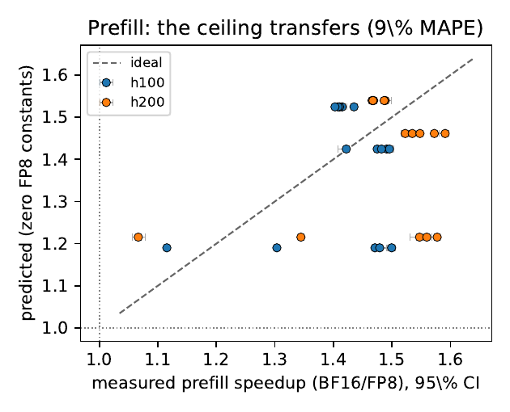
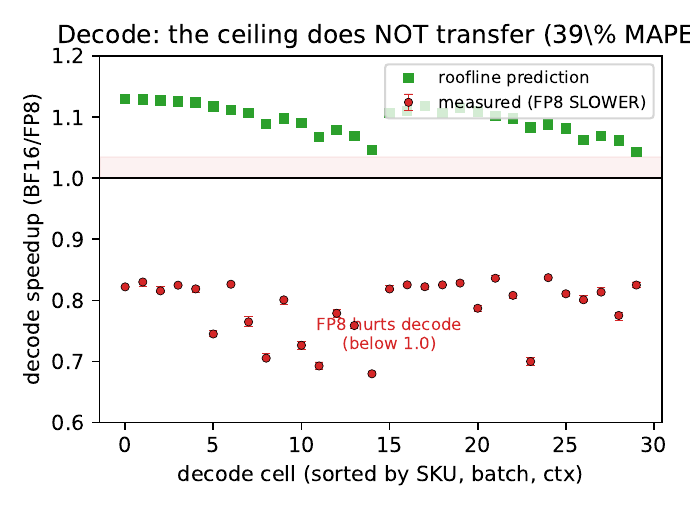
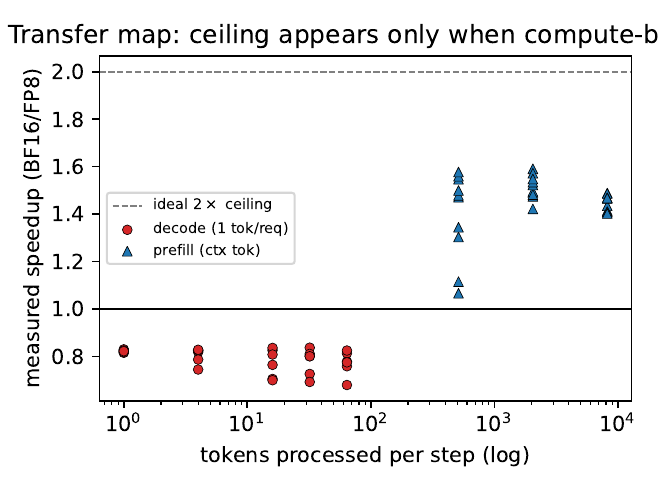

FP8 tensor cores promise 2× the matmul throughput, so a roofline says every projection should get 2× cheaper. We turn that into a falsifiable, zero-constant closed-form test and run it on real vLLM. The ceiling transfers cleanly to compute-bound prefill (measured 1.45×, predicted 1.39×). For decode the closed form predicts a small speedup — but FP8 is measured 1.27× SLOWER. This page reports both outcomes faithfully and names the mechanism.
FP8 number formats let the GPU's tensor cores run matrix multiplications at twice the BF16 peak, and an FP8 weight file halves the bytes the GPU must stream for each weight matrix. A roofline calculator therefore says every projection matmul should get 2× cheaper, no matter which limit binds. The deployment question is whether that 2× ceiling survives the trip through a real serving engine into user-visible latency. We turn it into a single closed-form prediction that adds ZERO new constants — it halves only the projection term of an existing BF16 mechanism model and leaves everything else fixed — then test it on Llama-3.1-8B across 60 cells (30 decode, 30 prefill) on H100 and H200.
Prefill is compute-bound, so the matmuls dominate the step and doubling the FP8 peak helps. Measured prefill speedup is 1.45× against a predicted 1.39× — a 9.1% mean error from a model that fit nothing to FP8. All 30 prefill cells have a 95% CI strictly above 1. The zero-constant prediction is confirmed.
Decode is memory- and host-bound, so the closed form predicted only a small 1.10× speedup. Reality has the opposite sign: FP8 decode is 1.27× SLOWER than BF16 (measured ratio 0.79, 39.0% mean error). Every one of the 30 decode cells has a 95% CI strictly below 1 — the falsification is sharp, not noisy.
A W8A8 FP8 path must quantize the activations to FP8 on every step before each matmul — an elementwise/host cost the projection roofline does not model. At decode batch sizes the halved weight-stream saves almost nothing (the step is already host- and KV-dominated), while the added activation-quant work is paid every step. FP8 nets a slowdown of 27% on average, up to 47% at the largest batch×ctx.
The same FP8 checkpoint has opposite latency value in the two phases. Weight+activation FP8 helps prefill-heavy and throughput-oriented serving (a real, predictable ~1.45×), but HURTS decode-latency-bound serving with tight per-token SLOs. The actionable rule: phase-aware precision — FP8 prefill workers, BF16 decode workers — and FP8 decode kernels that fuse or amortize activation quantization.
No background is assumed. Three ideas carry the rest of the page: what the 2× FP8 ceiling is, why prefill and decode sit on opposite sides of it, and why a per-step host cost can flip the sign of the answer.
Each projection matmul obeys the roofline below: its time is the larger of a compute branch (FLOPs over peak rate) and a memory branch (bytes over HBM bandwidth). FP8 changes exactly two datasheet quantities for the weight matrices — the matmul peak doubles, and the weight bytes per element halve. Whichever branch binds, the projection time halves. That is the ceiling whose transfer to real latency we test.
Here $P_f$ is the BF16 peak, $\beta_{hbm}$ the HBM bandwidth, $B$ the weight bytes per element, and $\bar\eta,\eta_m$ are efficiencies measured once with ncu microbenchmarks — never fit to served latency. FP8 sets $P_f\!\to\!2P_f$ and $B\!\to\!B/2$, so $t_{\text{gemm}}$ halves on either branch.
Prefill processes the whole prompt at once, so the matmuls have many rows ($M$ large) and the compute branch binds — doubling the peak should help. Decode emits one token per request per step, so $M$ is tiny and the memory branch binds: only the halved weight bytes help, and only on the small slice of the step that is weight-streaming. The rest of a decode step is attention/KV traffic and a CPU-side host floor that FP8 does not touch at all.
We reuse a BF16 single-GPU mechanism model whose constants come only from ncu microbenchmarks and datasheets — never fit to served step-time. It decomposes a step into projection GEMMs, attention/KV traffic, elementwise kernels, a kernel-launch floor, a non-overlapped host/scheduler term, and sampling.
The predicted speedup $r$ is the BF16 step over the FP8 step. For prefill, $T_{\text{proj}}$ dominates and the host term is small, so halving $T_{\text{proj}}$ pushes $r$ toward 2×. For decode, the memory branch makes $T_{\text{proj}}$ small and the host floor $S(N)$ dominates, so even halving $T_{\text{proj}}$ barely lifts $r$ above 1 — the closed form predicts 1.10×, essentially 'no transfer, slight help.' The measurement below shows decode is worse than this: an actual slowdown.
For $N$ prompts of length ctx we generate 65 tokens with ignore-eos and greedy sampling. The DECODE step is (wall(65) − wall(1)) / 64, which cancels the prefill and startup overhead and leaves the per-step decode work (sampling included). The PREFILL step is wall(1), the single-step latency to emit the first token. We sweep batch $N\in\{1,4,16,32,64\}$ and ctx $\in\{512,2048,8192\}$, 15 timed reps per cell after 2 warmups, medians per arm. The per-cell FP8/BF16 ratio is median(BF16)/median(FP8); its 95% CI is a bootstrap that resamples each arm's 15 reps independently.
Across 60 cells (30 decode, 30 prefill) on H100 and H200, two opposite outcomes emerge. The table summarizes per-phase: the measured speedup, the zero-constant prediction, the mean absolute error, and how many cells have a 95% CI separated from the no-effect line of 1.0.
| Phase | measured (×) | predicted (×) | MAPE | range (×) | CI separated | verdict |
|---|---|---|---|---|---|---|
| Prefill | 1.45 | 1.39 | 9.1% | 1.07–1.59 | 30/30 > 1 | ceiling transfers |
| Decode | 0.79 | 1.10 | 39.0% | 0.68–0.84 | 30/30 < 1 | falsified — FP8 slower |
A ratio above 1.0 means FP8 is faster than BF16; below 1.0 means slower. Decode's measured ratio 0.79 corresponds to FP8 being 1.27× slower (1/0.79).
Measured prefill speedup is 1.45× (range 1.07–1.59×) against a predicted 1.39×, a 9.1% mean absolute error (22.9% max). All 30 prefill cells have a 95% CI strictly above 1: FP8 reliably speeds up prefill, and the zero-constant closed form predicts by how much. The transfer is strongest where the step is most compute-bound (large ctx or batch) and weakest at the smallest prefill (the N=1, ctx-512 cell measures 1.09×, predicted 1.20×), exactly where the compute branch barely binds. Both SKUs agree: 1.42× on H100, 1.48× on H200.

Prefill — predicted (zero FP8 constants) vs measured FP8/BF16 speedup, with measurement 95% CIs. Points cluster around 1.4–1.5×; all 30 cells sit above 1.0. The 2× ceiling transfers to compute-bound prefill, and the zero-constant closed form predicts the magnitude within 9.1%.
Speedup ratio (FP8 vs BF16) scaled to a 2.0× axis. Prefill clears 1.0 as predicted; decode is predicted just above 1.0 but measured below it — FP8 makes decode slower.
The closed form predicted 1.10× (a slight speedup). The measurement has the opposite sign: a ratio of 0.79, i.e. FP8 decode is 1.27× SLOWER than BF16 (39.0% mean error, 54.7% max). The falsification is sharp — all 30 decode cells have a 95% CI strictly below 1, so the slowdown is not measurement noise. In absolute terms FP8 adds 3.3 ms to a decode step on average — 27.0% of the BF16 step, rising to 47.1% at the largest batch×ctx, where the per-step activation-quantization work scales with the token count. Both SKUs slow down: 0.77 on H100, 0.81 on H200; the higher-bandwidth H200 slows slightly less, consistent with its weight-stream win being a larger share of its faster step.

Decode — measured FP8/BF16 ratio (red, with 95% CIs) vs the roofline prediction (green). The closed form predicts a small speedup above 1.0; every one of the 30 measured cells is a slowdown below 1.0. The ceiling does not transfer — FP8 hurts decode.
Plotting the measured speedup against tokens-processed-per-step makes the boundary explicit. Decode cells (one token per request, so few tokens/step) are all below 1.0 regardless of batch; prefill cells climb toward 2× as the per-step token count — and thus the compute share — grows. The ceiling transfers exactly in the compute-bound regime the roofline identifies, and inverts to a slowdown in the memory/host-bound regime.

Transfer map — measured FP8/BF16 speedup vs tokens processed per step (log scale). Decode (one token/request) sits below 1.0 regardless of batch; prefill rises toward the 2× ceiling as the step becomes compute-bound. The ceiling appears only in the compute-bound regime.
The cleanest decode cell is N=1, ctx-512 on H100 — host-floor-dominated, minimal compute. BF16 step 9.41 ms, FP8 step 11.45 ms: FP8 is 2.04 ms (21.6%) slower. Here the projection GEMM is the smallest and the host floor the largest share of the step (s₀ ≈ 16.6 ms on H100, 14.0 ms on H200), so the FP8 weight-stream win is near zero and the activation-quant overhead is pure cost.
The transfer map yields a concrete provisioning rule on these SKUs. The same FP8 checkpoint has opposite latency value in the two phases, which argues for phase-aware precision.
Prefill-heavy / throughput-oriented serving — large prompts, large chunked-prefill batches, or prefill-disaggregated nodes — should adopt W8A8 FP8: the 2× GEMM ceiling transfers to a real ~1.45× step speedup, predictable in closed form with zero free parameters.
Decode-latency-bound serving — small interactive batches, tight per-token (TPOT) SLOs — should NOT use this W8A8 path for latency: it is 1.27× slower because the activation-quant overhead exceeds the halved weight-stream. The fix is FP8 decode kernels that fuse or amortize activation quantization, or BF16 decode workers in a disaggregated split.
We model latency only; FP8's memory-capacity and accuracy trade-offs are orthogonal and unchanged by these results. This page is part of a portfolio whose recurring thesis is that a per-step non-overlapped host/elementwise term — the cost GEMM-centric latency models leave out — is repeatedly the load-bearing quantity in real serving. See the full host-term portfolio →
The claims are deliberately bounded. Each item names a specific way the result could be over-read and the precise scope that remains valid.
The conclusions hold for Llama-3.1-8B in BF16 vs neuralmagic W8A8 FP8 on the single-GPU PACE SKUs H100 and H200, eager vLLM, over the 60-cell grid. The central finding — that the FP8 GEMM ceiling transfers to prefill but inverts to a measured slowdown for decode, because a per-step activation-quantization cost the roofline omits exceeds the halved weight-stream — is the part expected to generalize beyond this grid in sign, if not in exact magnitude.